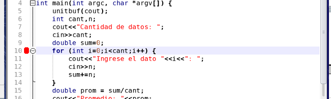

Para que podamos inspeccionar las variables, o controlar el avance del programa, primero debemos hacer que se detenga en medio de la ejecución. Para esto, antes de comenzar a ejecutarlo, debemos establecer "puntos de interrupción" (breakpoints). Estos son puntos en el código (números de linea) donde el depurador debe detener el programa. Por lo general, se indican con un circulo rojo sobre el márgen izquierdo. Para colocarlo en ZinjaI, puede hacer click sobre dicho márgen, o posicionar el cursor de texto en la linea de interés y presionar F8.

Pruebe colocar un punto de interrupción en la línea 10 (donde comienza el bucle for).
Volver... Continuar...